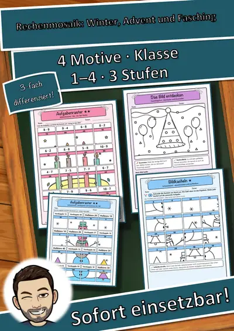

Gemeinschaftsposter Winter „Gemeinsam leuchten wir“ – Klassenposter aus 24 Teilen, 3-fach differenziert (Klasse 1–4)
Ein Bild, das nur gemeinsam entsteht: Jedes meiner Kinder gestaltet eines von 24 Teilen – zusammengesetzt ergibt sich ein großes Winterposter (ca. 108 × 60 cm) mit leuchtendem Stern, Winterstadt und dem Spruch „Gemeinsam leuchten wir“. Ideal für den Flur, die Klassentür oder den Advent.
Dreifach differenziert (★/★★/★★★):
- ★ Felder in der Farbe der Farbpunkte anmalen
- ★★ große Felder mit Mustern von der Musterkarte füllen
- ★★★ eigene Muster erfinden und einzeichnen
Enthalten (36 Seiten):
- Hinweise für Lehrkräfte mit Ablauf (ca. 90 Minuten), Differenzierung, Kopierplan und Lehrplanbezug
- Überblick mit dem fertigen Poster in Farbe
- Anleitung in 6 Bildschritten mit Ich-kann-Leiste
- Plan zum Zusammensetzen
- 24 nummerierte Poster-Teile mit Farbpunkten, Passermarken und Nachbar-Nummern
- Musterkarte (★★) und Seite zum Muster-Erfinden (★★★)
- Lesetext „Ein Bild aus vielen Teilen“ mit drei Aufgaben und eigenem Klassenspruch
- Malen nach Ergebnis in 3 Stufen (bis 20, bis 100, Einmaleins) für schnelle Kinder
- Ausmalbild Winter-Mandala mit Zählaufgabe
- Lösungen
Die Vorlagen sind eigene Vektorgrafiken, die Illustrationen habe ich mit KI-Unterstützung erstellt und einzeln geprüft, das Musterfoto ist ein eigenes 3D-Rendering der Vorlagen. Viel Freude beim gemeinsamen Gestalten wünscht Snice
FachKunst
KlasseKl. 1–4
SchulformGrundschule
MaterialartArbeitsblätter, Mal- und Bastelvorlagen, Fördermaterial/Inklusion
Ähnliche Materialien

Die große Winter-Umfrage – Rollenspiel Daten, Tabellen und Säulendiagramme, 3-fach differenziert (Klasse 3)

Würfelkunst Winter – Tannenbaum-Muster erwürfeln und zeichnen, 3-fach differenziert (Klasse 2–4)

Lesespaziergang Materialpaket: 3 Geschichten, 6-fach differenziert – Herbst, Advent, Winter (Klasse 1–4, DaZ)

Rechenmosaik Paket Winter, Advent und Fasching: 4 Motive, lösen – kleben – ausmalen (Klasse 1–4)

Materialpaket Advent und Winter für die 6. Klasse: 7 Lesespurgeschichten mit Rätselaufgaben (Weihnachtsbasar, Saturnalien, Lichterfeste & mehr)

Materialpaket Winter und Advent für die 4. Klasse: 5 Lesespurgeschichten mit Rätselaufgaben (Weihnachtsmarkt, Fröbelsterne, Sternbilder & mehr)

Escape Room Winter – Deutsch Klasse 5 für die Mittelschule: 6 Stationen, 2 Schlösser, 1 Zauberwort (GRATIS)